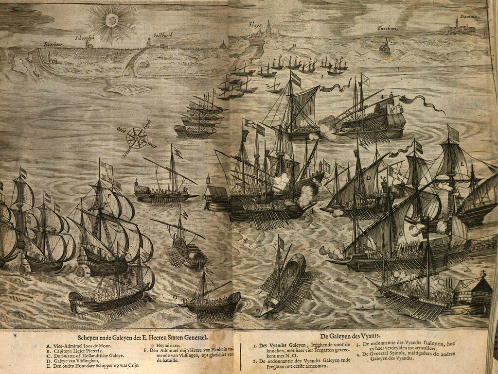
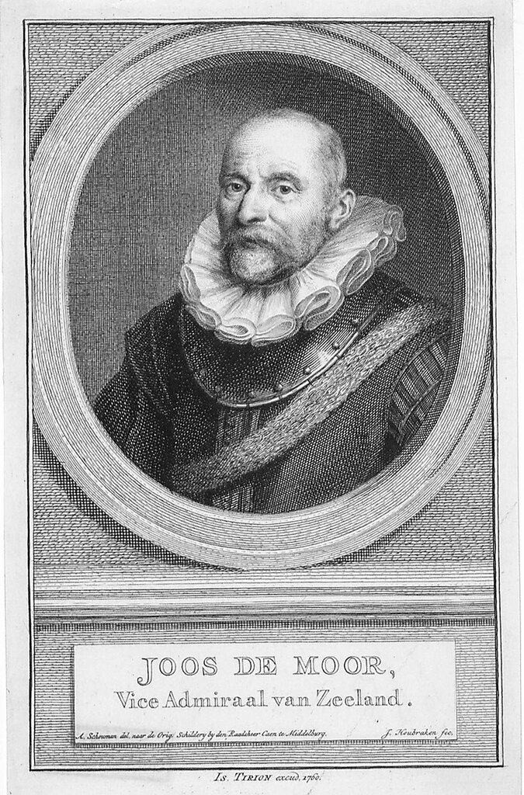
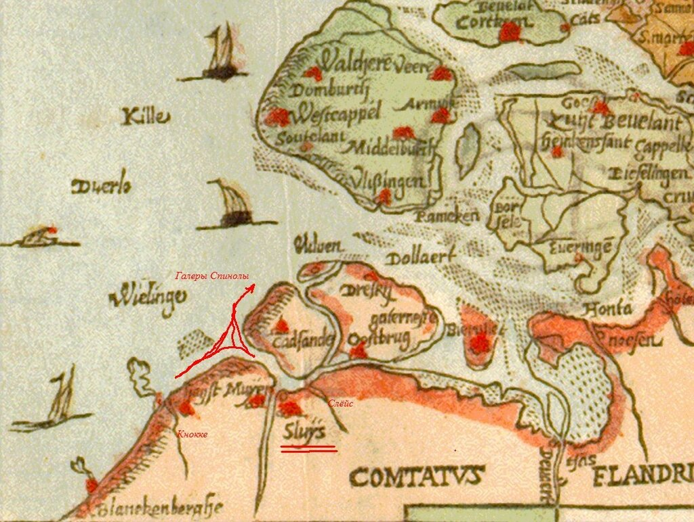
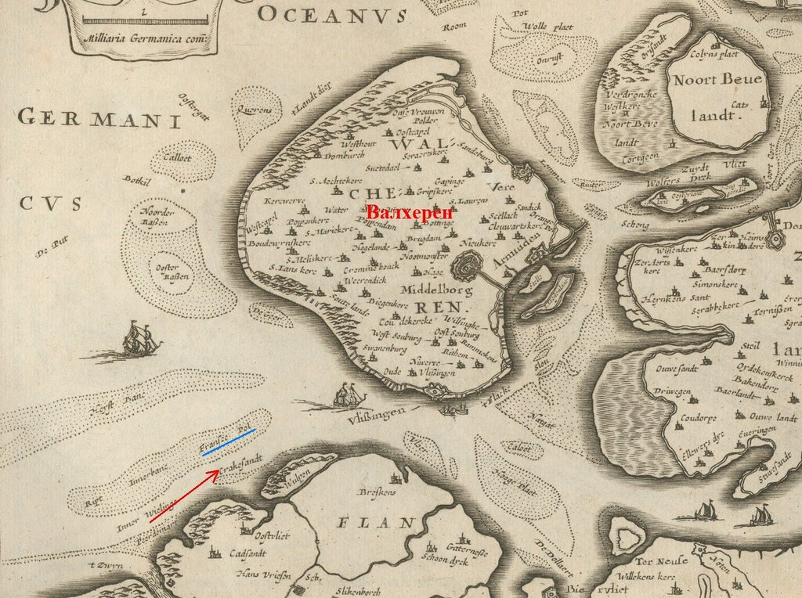
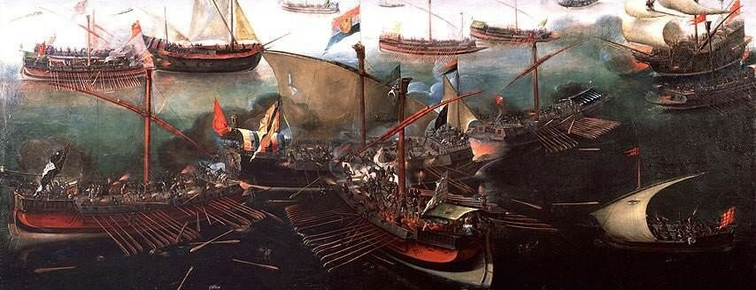

Федерико Спинола: последний бой
Суди, Господи, обидящыя мя, побори борющыя мя.
Приими оружие и щит, и востани в помощь мою.
Изсуни мечь, и заключи сопротив гонящих мя. Рцы души моей: спасение твое есмь Аз.
Псалом 34
Это, видимо, один из самых трудных постов, которые мне приходилось писать. И не только потому, что первоисточники написаны в основном на нидерландском и испанском языках, познания в которых у меня ничтожны, а и потому, что содержащаяся в них фактура противоречива, а каких-либо внешних точек опоры для того, чтобы сделать выбор в пользу той или иной версии, не существует. Голландскую точку зрения мы будем отслеживать по книге Орлерса, которая появилась практически сразу после изучаемого нами события. (Jan Janszn Orlers, Beschrijvinghe ande af-beeldinge van alle de Victorien, So te Water als de Lande De… Mavrits van Nassav (Leyden 1610) . Полное ее название : Триумф Нассау или Описание и представление всех побед, как на суше так и на море, одержанных с божьей помощью благородными, высокочтимыми и могущественными господами Генеральных Штатов объединенных Нидерландских Провинций под управление и командованием Его Превосходительства принца Морица Нассауского. Ниже приведена гравюра, взятая из этой книги).

Приведем перевод легенды к этой гравюре; разъяснения последуют ниже.
Корабли и галеры Генеральных Штатов
A. Вице-адмирал Йос де Моор.
B. Капитан Лигир Питерс.
C. «Черная галера» или Галера из Голландии
D. Галера из Флиссингена.
E. «Старая собака» под командой шкипера Грейн Хейндрикса.
F. Корабли Адмирала Хаултайна, идущие из Флиссингена
Галеры противника
1. Галеры противника, находившиеся перед Кнокке с четырьмя фрегатами обозначены О.
2. Боевой порядок галер и фрегатов противника при первом столкновении.
3. Боевой порядок галер противника при повторной атаке.
4. Галера Спинолы с другими галерами противника
Испанский взгляд на событие изучим по книге Фернандес Дуро ( Fernández Duro, Cesáreo. Armada Española desde la unión de los reinos de Castilla y Aragón. III. Madrid, Spain,1898). Подправим канву рассказа деталями из современных исследований и некоторыми морскими подробностями, которые опустили авторы вышеназванных трудов.
Неудача, которую потерпели галеры Спинолы в октябре 1602 года, не поколебала уверенности Федерико в том, что галеры могу послужить эффективным инструментом для захвата Англии и усмирения непокорных голландских провинций. Оправившись после трудного перехода, генуэзец начал подготовку добравшихся до Слёйса галер к летнему сезону 1603 года. Однако военно-политическая обстановка в регионе претерпела серьезные изменения, которые нельзя было не учитывать. Испанские войска под командованием Амбросио Спинолы, старшего брата Федерико, глубоко увязли в континентальных боях. Планы вербовки пополнения были сорваны. Смерть Елизаветы (3 апреля 1603 года) дала новые козыри сторонникам мирного решения противоречий между Испанией и Англией, выступавших против вторжения. Практически прекратились поступления средств на содержание галер во Фландрии. Венецианский посол, хорошо осведомленный в тонкостях отношений при испанском дворе, писал, что «генуэзец уже не столь последователен в отстаивании своих прежних предложений, сделанных королю Испании. Он заявляет, что захваченных в боях трофеев недостаточно для содержания эскадры, и казна либо должна покрыть задолженность, либо эскадра будет распущена».
В этих условиях Спинола, и в обычной обстановке не сидевший без дела ни минуты, не мог принять другого решения, кроме как с началом сезона выйти из пункта базирования на свободную охоту и добыть необходимые средства у противника.
Основные базы испанского флота во Фландрии находились на побережье Северного моря от Слёйса до Кнокке. После завершения ремонта пострадавших в последних боях галер численность гребной эскадры составила восемь боеспособных единиц.
Слёйс, в котором базировались испанские галеры, был блокирован с моря эскадрой зеландского вице-адмирала Йоса де Моора (Joost de Moor, или иногда Joos de Momper).

Йос де Моор. Гравюра из Atlas van Zeeland ..., Amsterdam, 1760. Zeeuws maritiem muzeeum
Де Моор был одним из первых капитанов морских гёзов и дослужился в независимых Нидерландах до звания вице-адмирала Флиссингена, а затем первого вице-адмирала недавно созданного Адмиралтейства Зеландии (1597). Во времена Непобедимой Армады (1588) де Моор блокировал в Дюнкерке силы Александра Фарнезе, не позволив ему прийти на помощь основным формированиям испанцев. Отряд де Моора входил в эскадру Соединенных Провинций под командованием адмирала Хаултайна. Во время описываемых нами событий де Моор держал свой флаг на кромстере «Gouden Leeuw». В голландском тексте тип корабля обозначен как Smack-seyl – корабль со шпринтовым парусом.
Поддержку «Золотому льву» оказывали «Черная галера» (мы писали о ней раньше), командовал которой капитан Jacob Michielsz (Jacob Michelzoon) , еще одна галера Arrow под командованием Корнелиса Янса ван Горрума (Cornelis Janssz van Gorrum) и галиот, которым командовал капитан Логир Питерс (Logier Pieterzs). Немного поотдаль находился корабль Zee hondt («Морской пес»). Обязанности капитана на нем исполнял шкипер Грейн Хейндрикс (в подписи к гравюре этот корабль назван «Старый пес»). На кораблях, осуществлявших блокаду, находилось, как пишет Орлерс, помимо штатных экипажей всего 18 английских мушкетеров из Флиссингена.
Капитан купеческого конвоя, следовавшего из района Остенде, предупредил де Моора о необычной активности в районе дислокации испанских кораблей. Затем поступила более конкретная информация: 26 мая 1603 года Спинола вышел в море на восьми галерах и четырех фрегатах с 1130 мушкетерами морской пехоты на борту, прибывшими из-под Остенде.

Карта района выдвижения галер Спинолы
Галеры Спинолы вышли на рассвете, при слабом западном ветре и направились на восток, лавируя между песчаными отмелями, носящими название Pol Francis.
Целью их был остров Валхерен, на котором базировались основные морские силы Соединенных Провинций (после строительства в 1871 г. дамбы и осушения прилегающих территорий остров Валхерен фактически превратился в полуостров).

Мели Pol Francis и остров Валхерен. Фрагмент карты из атласа 'de Vyerighe Colom' (1696)
Парусные корабли блокирующих сил из-за слабого ветра были фактически обездвижены. Зато гребные «Черная галера» и Arrow воспользовались основным преимуществом галер в условиях штиля и на веслах устремились на перехват отряда противника. Было пять часов утра.

Арт Антонис, также известный как Аарт ван Антум. Провал попытки Федерико Спинолы прорвать блокаду Слёйса 26 мая 1603 года.
Спинола повернул свои галеры курсом на норд и пошел по направлению к голландцам. Вскоре испанцы приблизились к парусным кораблям противника и с громкими криками повели свои галеры на абордаж. Две галеры, одной из которых командовал сам Спинола, атаковали кромстер вице-адмирала де Моора. Четыре других пошли на галиот капитана Питерса и на голландские галеры.
Тем временем «Черная галера» сблизилась с двумя галерами из отряда Спинолы, которые на полном ходу протаранили ее с левого и с правого борта. Здесь и сказалось мастерство кораблестроителей из Дордрехта, которые сделали очень прочный набор «Черной галеры». Она выдержала оба тарана без серьезный последствий для своего корпуса. Капитан приказал отразить атаку испанцев и перевести абордаж противника во встречный бой. Одновременно гребцы с топорами были брошены на шпироны вражеских галер, чтобы разрушить их слабую конструкцию. Вскоре экипаж «Черной галеры» сумел освободиться от галер противника. И хотя капитан ее был убит, занявший его место лейтенант Харт, также серьезно раненный, сумел сбросить в море проникших на корабль испанских бойцов. Галеры сторон разошлись, не имея намерения и сил продолжать бой.
Почти аналогичным образом сложился бой галиота под командованием Питерса с двумя испанскими галерами. Там тоже удалось предотвратить выход абордажных команд на борт галиота, обрубив слабые шпироны атакующих испанских галер.
Между тем еще три галеры из отряда генуэзца атаковали флагманский корабль Йоста де Моора, но получив мощный отпор артиллерии и мушкетов, размещенных на высокой кормовой надстройке кромстера, они вынуждены были отойти от голландского флагмана и присоединились к кораблям, сгруппировавшимся вокруг «Черной галеры». Казалось, судьба этого поврежденного уже корабля предрешена, но тут, как часто бывает на море, в дело вмешался господин Случай. Господствующее в этом районе течение привело галиот Питерса вплотную к «Черной галере» и огонь его пушек заставил противника отказаться от абордажа. Судьбу боя решил выстрел из камнемета с «Черной галеры»: каменное ядро попало точно в то место, где находился Федерико Спинола. Шансов выжить у него не было никаких.
В это время со стороны Флиссингена появились корабли под команднованием адмирала Хаултайна. Лишившиеся командира испанские галеры посчитали за лучшее ретироваться в устье протоки Слёйса и выйти из боя.
Я не буду приводить данные о числе погибших с каждой стороны: сведения эти настолько противоречивы, что не представляется возможным за что-нибудь зацепиться, чтобы остаться на объективной позиции. Ясно, что речь идет о нескольких сотнях человек и нескольких поврежденных кораблях. Важно, на мой взгляд, отметить другое: как в случае сражения при Лепанто в 1571 году, когда судьбу битвы во многом определили потери среди высшего командного звена, так и в бою при Слёйсе в 1603 году гибель командующего означала потерю воли и стимула к продолжению боевых действий.